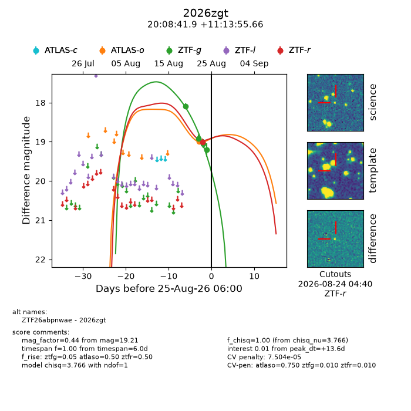
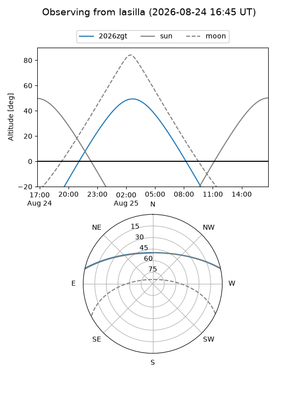
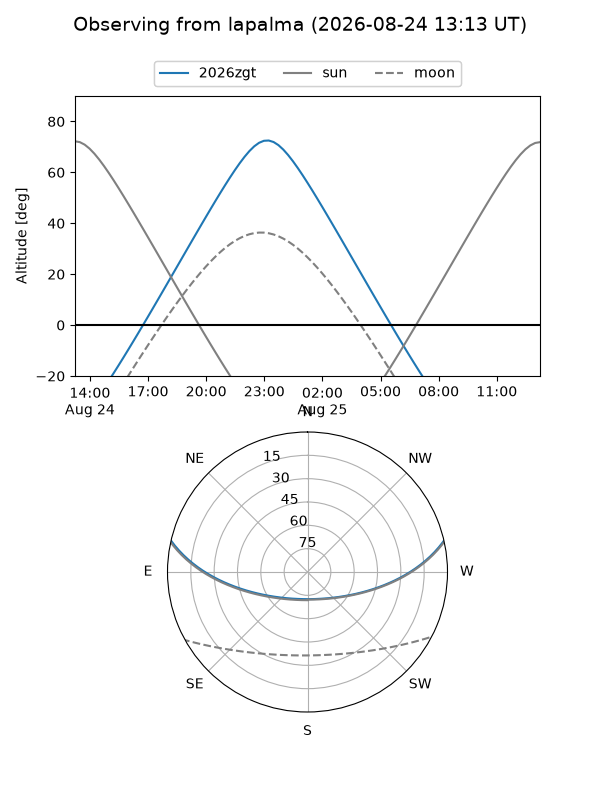
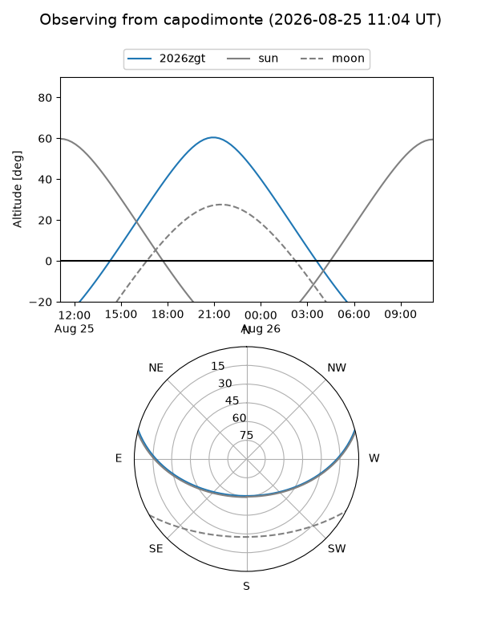
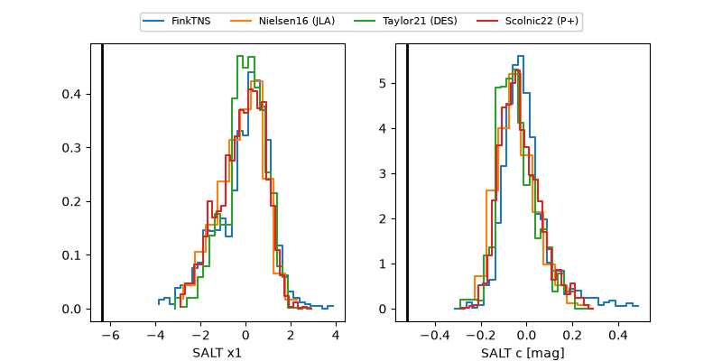

2026zgt
Target 2026zgt at 2026-08-25 06:03
Aliases and brokers:
FINK-ZTF: ztf.fink-portal.org/ZTF26abpnwae
Lasair-ZTF: lasair-ztf.lsst.ac.uk/objects/ZTF26abpnwae
ALeRCE-ZTF: alerce.online/object/ZTF26abpnwae
YSE-PZ: ziggy.ucolick.org/yse/transient_detail/2026zgt
TNS name: wis-tns.org/object/2026zgt
Direct TNS query: direct search
alt names
ZTF26abpnwae (ztf,fink_ztf)
2026zgt (tns,yse)
Coordinates:
equatorial (ra, dec) = 302.1745,+11.23213
equatorial (HMS+DMS) = 20:08:41.89,+11:13:55.66
galactic (l, b) = (52.0738,-11.53214)
Flags:
TNS type: nan
peak dt: +13.6
likely cv: !!
Photometry:
last atlaso=18.99, ztfg=19.21, ztfr=19.01
1 atlaso, 4 ztfg, 1 ztfr detections
Lightcurve

Visibility



Additional plots
